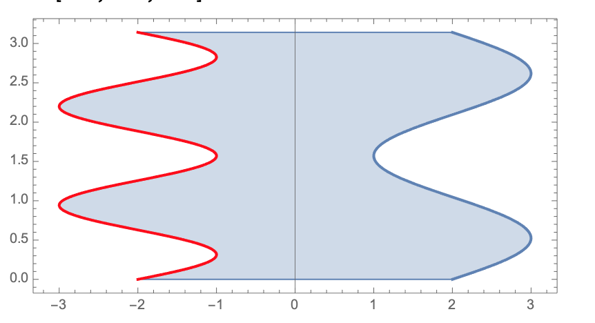
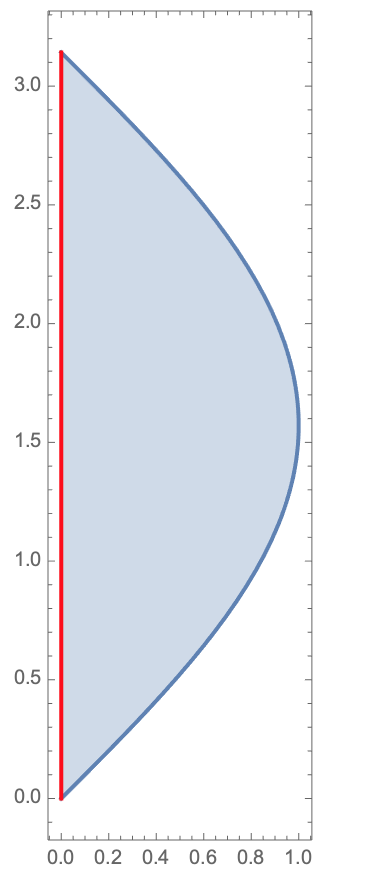
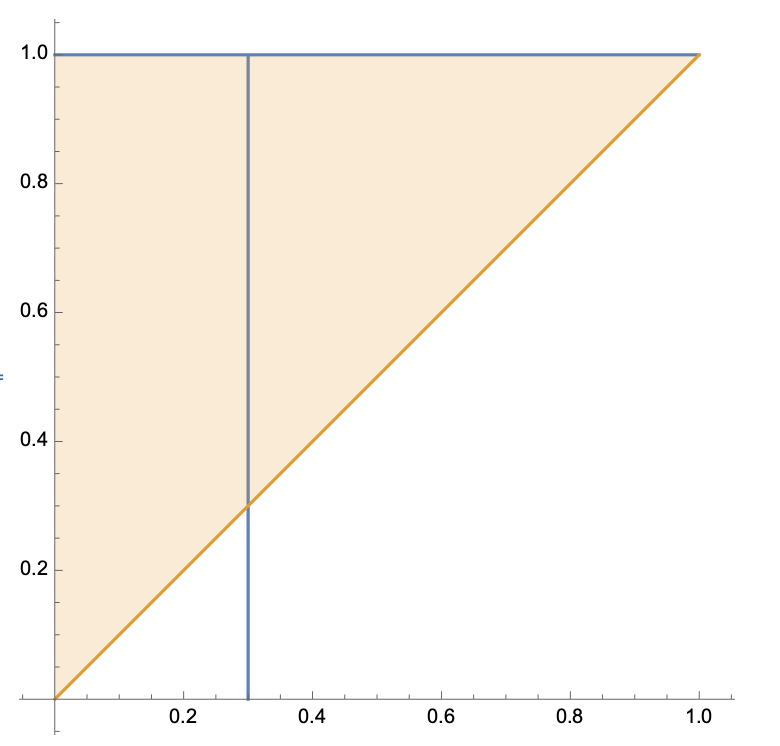

Sea \(\mathcal{R}=[a,b]\times[c,d]\) y
\(f:[a,b] \times [c,d]\to \mathbb{R}\) una función acotada y Riemann integrable sobre
\(\mathcal{R}\). Entonces
Para casi toda \(y\in [c,d]\), la integral 1-dimensional
\(\int_a^bf(x,y)dx\) existe. Denotemos esta integral
por \(A(y)\).
La integral \(\int_c^d A(y)dy\) existe y
\[
\int_\mathcal{R}f = \int_c^d A(y)dy.
\]
Lo anterior se puede escribir como la integral iterada
\[
\int_\mathcal{R}f = \int_c^d \left( \int_a^b f(x,y)dx \right)dy.
\]
Un resultado similar es válido intercambiando los papeles de
\(x\) e \(y\): para casi toda \(x\in [a,b],\) la integral
\(B(x):=\int_c^d f(x,y)dy\) existe, la función \(B(x)\)
es integrable y
\[
\int_\mathcal{R}f = \int_a^b \left( \int_c^d f(x,y)dy \right)dx.
\]
Notas
Notación: la integral se puede denotar como
\[
\int_{\mathcal{R}}f=\int_{\mathcal{R}}f dA=\int_{\mathcal{R}}f(x,y)dA(x,y)=\int_{\mathcal{R}}f(x,y) dx\otimes dy
\]
La parte "para casi toda \(y\in [c,d]\)" se debe de entender de la siguiente manera.
Una caja en \(\mathbb{R}^n\) es un conjunto de la forma
\[
[a_1,b_1]\times \cdots \times [a_n,b_n].
\]
En \(\mathbb{R}^1\) una caja es un intervalo, en \(\mathbb{R}^2\) es
un rectángulo, en \(\mathbb{R}^3\) es una caja.
Dada una caja \(C\), su medida, denotada \(|C|\) ó \(\lambda(C)\)
se define como \((b_1-a_1)\cdots (b_n-a_n) \).
Un conjunto \(N\subseteq \mathbb{R}^n\) tiene contenido cero o es de contenido cero
si para toda \(\varepsilon >0 \) existen una serie de cajas en \(\mathbb{R}^n\), \(C_1,\dots, C_n \)
tal que \(N\subseteq \cup_{i=1}^n C_i\) y \(\sum_{i=1}^n |C_i|< \varepsilon\).
Por ejemplo, una curva en \(\mathbb{R}^2\) tiene contendio cero.
Finalmente, la frase "para casi toda \(y\in [c,d]\)" significa que
existe un conjunto \(N\subseteq [c,d]\), de contenido cero tal que
para toda \(y\in [c,d]\setminus N\) se vale la propiedad en cuestión. Es decir,
se puede pensar al conjunto \(N\) como despreciable/irrelevante.
La integral de Riemann en 2D tiene la interpretación geométrica de
volumen bajo la gráfica de la función. Con este punto de vista la idea de las integrales iteradas es que la integral más interna nos da
áreas y la integral más externa (la segunda) suma las área anteriores para generar el volumen.
Corolario
Sea \(\mathcal{R}=[a,b]\times[c,d]\) y
\(f:[a,b] \times [c,d]\to \mathbb{R}\) una función continua, excepto tal vez en un
conjunto de contenido cero.
Entonces \(f\) es integrable y
\[
\int_{\mathcal{R}}f(x,y)=\int_a^b \int_c^d f(x,y)dydx=\int_c^d \int_a^b f(x,y)dxdy
\]
Ejercicio
Para cada una de las siguientes funciones y
rectángulos
calcula \(\int_\mathcal{R}fdA\). Puedes suponer
que todas las funciones que se presentan
son integrables.
El dominio de \(f\) es el que se encuentra entre la gráfica verde
(\(y= 2x^{2}\)) y la gráfica roja (\(y = x^{2}\)),
Tenemos que la condición del dominio es \(x^{2} \leq y \leq 2x^{2}\)
la cual es equivalente a \(\frac{\sqrt{y}}{\sqrt{2}} \leq x \leq \sqrt{y}\).
Entonces fijando \(y \in [0, 1]\) y tamando
\begin{equation*}
A(y) = \int_{0}^{1}f(x, y)dx
\end{equation*}
Por la regla de correspondecia de \(f\) simplificamos
\begin{eqnarray*}
A(y) & = & \int_{\frac{\sqrt{y}}{\sqrt{2}}}^{\sqrt{y}} x + 2y dx \\
& = & \frac{1}{2}\left(y - \frac{y}{2}\right) + 2y\left(\sqrt{y} -
\frac{\sqrt{y}}{\sqrt{2}}\right) \\
& = & \frac{y}{4} + \sqrt{2}\left(\sqrt{2} - 1\right)y^{\frac{3}{2}}
\end{eqnarray*}
Suponiendo que \(f\) es integrable, entonces por el ejercicio 12.5 tenemos
\begin{eqnarray*}
\int_{R} f & = & \int_{0}^{1} A(y) dy \\
& = & \int_{0}^{1} \frac{y}{4} + \sqrt{2}\left(\sqrt{2} -
1\right)y^{\frac{3}{2}} dy \\
& = & \frac{1}{8} + \frac{2\sqrt{2}(\sqrt{2} - 1)}{5}\\
& = & \frac{37 -16\sqrt{2}}{40}
\end{eqnarray*}
Sean \(f:[a,b]\to \mathbb{R}\),
\(g:[c,d]\to \mathbb{R}\) dos funciones continuas,
denota \(\mathcal{R}=[a,b]\times [c,d]\) y define
\(h:\mathcal{R}\to \mathbb{R}\) por \(h(x,y)=f(x)g(y)\).
Expresa la integral \(\int_{\mathcal{R}} h(x,y)\)
en términos de las integrales de \(f\) y de \(g\).
Ejercicio
Calcula la integrales de las siguientes funciones.
Nota: este ejercicio muestra que el orden de integración puede
ayudar a calcular una integral.
El volumen determinado por el paraboliode elíptico \(x^2+2y^2+z=16\) delimitado
por los planos coordenados y los planos \(x=2,y=3\).
El volumen en el primer octante determinado por la gráfica de
\(z=x\sec^2(y)\), \(z=0,x=0,x=2,y=0,y=\pi/4\).
El volumen determinado por la gráfica de \(z=2+x^2+(y-2)^2\) y los planos
\(z=1\), \(x=-1,x=1\), \(y=0,y=1\).
Ejercicio
Utilizando la interpretación de la integral como volumen
bajo la gráfica, calcula la integrales de las siguientes funciones.
Recuerda que \(\lfloor x \rfloor\) denota el mayor entero
menor o igual a \(x\).
\(\int_{\mathcal{R}} \lfloor x\rfloor \lfloor y \rfloor\),
\(\mathcal{R}=[0,2]\times [0,2]\).
Sugerencia: si \(\mathcal{R}\) es un polígono en el
plano y \(f\) es igual a una constante \(c\) sobre \(\mathcal{R}\)
entonces \(\int_{\mathcal{R}}fdA=c * \textrm{área}(\mathcal{R})\)
Consideremos dos funciones \(g_1,g_2:[a,b]\to \mathbb{R}\)
con la propiedad de que \(g_1(t)\leq g_2(t)\),
para toda \(t\in [a,b]\). Para dichas funciones definimos
la región de Tipo I:
\[
\mathcal{S}=\{(x,y)\in \mathbb{R}^2: x\in [a,b], g_1(x)\leq y \leq g_2(x)\}.
\]
De manera similar, si tenemos dos funciones \(h_1,h_2:[c,d]\to \mathbb{R}\)
con la propiedad de que \(h_1(t)\leq h_2(t)\),
para toda \(t\in [c,d]\), definimos
la región de Tipo II:
\[
\mathcal{S}=\{(x,y)\in \mathbb{R}^2: y\in [c,d], h_1(x)\leq y \leq h_2(x)\}.
\]


Teorema
Sean \(g_1,g_2:[a,b]\to \mathbb{R}\) dos funciones continuas
en todo \([a,b]\) con la propiedad de que \(g_1(t)\leq g_2(t)\),
para toda \(t\in [a,b]\). Considera la región de Tipo I
\[
\mathcal{S}=\{(x,y): x\in [a,b], g_1(x)\leq y \leq g_2(x)\}.
\]
Sea \(f:\mathcal{S} \to \mathbb{R}\) una función y
supongamos que \(f\) es continua en \(\mathcal{S}\).
Entonces \(f\) es integrable sobre \(\mathcal{S}\) y la integral se puede calcular
como la integral iterada:
\[
\int_{\mathcal{S}}f = \int_a^b \left(\int_{g_1(x)}^{g_2(x)}f(x,y)dy \right)dx.
\]
Nota
Hay un resultado similar al Teorema anterior para regiones de Tipo II.
Sean \(h_1,h_2:[c,d]\to \mathbb{R}\) dos funciones continuas
en todo \([c,d]\) con la propiedad de que \(h_1(t)\leq h_2(t)\),
para toda \(t\in [c,d]\). Considera la región de Tipo II
\[
\mathcal{S}=\{(x,y): y\in [c,d], h_1(y)\leq x \leq h_2(y)\}.
\]
Sea \(f:\mathcal{S} \to \mathbb{R}\) una función acotada y
supongamos que \(f\) es continua en \(\mathcal{S}\).
Entonces \(f\) es integrable y la integral se puede calcular
como la integral iterada:
\[
\int_{\mathcal{S}}f = \int_c^d \left(\int_{h_1(y)}^{h_2(y)}f(x,y)dx \right)dy.
\]
Teorema
Aditividad con respecto a regiones
Sean \(\mathcal{S}_1, \mathcal{S}_2 \subseteq \mathbb{R}^2\) dos
regiones acotadas con interior no vacío y tal que la intersección
\(\mathcal{S}_1\cap \mathcal{S}_2\) tiene contenido cero. Si
la función \(f\) es integrable sobre \(\mathcal{S}_1\) y
\(\mathcal{S}_2\) entonces es integrable sobre \(\mathcal{S}_1\cup \mathcal{S}_2\)
y además
\[
\int_{\mathcal{S}_1 \cup \mathcal{S}_2}f = \int_{\mathcal{S}_1}f +\int_{\mathcal{S}_2}f
\]
Nota
En ciertas ocaciones, la región \(\mathcal{S}\) no es
una región del Tipo I o II, pero se puede expresar como
la unión de dichas regiones de tal forma que la intersección
de los uniendos tiene contenido cero.
Por ejemplo
en el caso de un anillo
\[
\mathcal{S}=\{(x,y): r\leq x^2+y^2 \leq R\}
\]
tenemos que \(\mathcal{S}=\mathcal{S}_1\cup \mathcal{S}_2\),
donde
\[
\mathcal{S}_1=\{(x,y): -R \leq x \leq R, g_1(x) \leq y \leq g_2(x)\},
\]
\[
\mathcal{S}_2=\{(x,y): -R\leq x \leq R, -g_2(x) \leq y \leq -g_1(x)\},
\]
y las funciones \(g_1, g_2:[-R,R]\to \mathbb{R}\) están dadas por
\[
g_1(x)=\left\{
\begin{array}{cc}
0 & -R \leq x \leq -r \\
\sqrt{r^2-x^2} & -r \leq x \leq r \\
0 & r \leq x \leq R
\end{array}
\right.
\]
\[
g_2(x)=\sqrt{R^2-x^2}.
\]
En casos como estos, usando la aditividad con respcto a regiones (teorema anterior)
tenemos que:
\[
\int_{\mathcal{S}} f = \int_{\mathcal{S}_1}f + \int_{\mathcal{S}_2} f.
\]
Es muy importante enfatizar que, para que la ecuación anterior sea válida,
la intersección entre las partes \(\mathcal{S}_1\) y
\(\mathcal{S}_2\) debe ser de contenido cero.
Teorema
Linealidad de la integral
Sea \(\mathcal{D}\) un subconjunto acotado con interior no vacío. Si
\(f,g\) son funciones integrables en \(\mathcal{D}\) entonces la combinación lineal
\(f+\alpha g\) (\(\alpha\) un escalar) también integrable y
\[
\int_{\mathcal{D}}f+\alpha g = \int_{\mathcal{D}}f+ \alpha \int_{\mathcal{D}}g
\]
Ejercicio
Calcula las siguientes integrales.
Nota: determina cómo expresar las regiones dadas en términos
de regiones Tipo I, Tipo II o uniones de dichas regiones.
\(\int_{\mathcal{S}}xy^2 \), donde
\(\mathcal{S}\) es la región acotada encerrada por las
parábolas \(y=x^2-16\) y \(y=-x^2+9\).
\(\int_{\mathbb{S}} 2x+y \), donde \(\mathcal{S}\) es
la región acotada encerrada por las gráficas de
\(y=|x|\) y \(y=6-|x-3|.\)
\(\int_{\mathcal{S}}e^{2x+5y}\), donde
\(\mathcal{S}=\{(x,y): |x|+|y|\leq 1\}\).
\(\int_{\mathcal{S}} xy\), donde
\(\mathcal{S}\) es la región acotada encerrada
por la recta \(y=2x-2\) y la parábola
\(2y^2=x-6\).
\(\int_{\mathcal{S}} x^3 \), donde
\(\mathcal{S}\) es la región encerrada por el triángulo con vértices
\((1,1), (6,1)\) y \((4,8)\).
Primero vamos a graficar la región \(S\) y obtener los puntos
de intersección de las gráficas \(y = \mid x \mid \) y
\(y = 6 - \mid x-3 \mid\). Entonces graficando obtenemos,
Ahora vamos a obtener los puntos de intersecci\'on \(A\) y \(B\).
Tenemos que si \(x < 0\), entonces
\(y = \mid x \mid = -x \) y si \(x < 3\), entonces
\(y = 6 - \mid x-3 \mid = 6 - ( -( x-3 )) = 3 + x \). Esto implica,
que si \(y = \mid x \mid = 6 - \mid x-3 \mid \) y \(x < 0\),
entonces \(-x = 3 + x\), es decir \(x = -\frac{3}{2}\) y
\( y = \frac{3}{2}\), lo cual implica que
\(A = (-\frac{3}{2}, \frac{3}{2})\). Por otro lado, si \(0 < x \), entonces \(y = \mid x \mid = x \) y si \(3 < x\), entonces \(y = 6 - \mid x-3 \mid = 6 - ( x - 3 ) = 9 - x \). Esto implica, que si \(y = \mid x \mid = 6 - \mid x-3 \mid \) y \(3 < x\), entonces \(x = 9 - x\), es decir \(x = \frac{9}{2}\) y
\(y = \frac{9}{2} \), lo cual implica que
\(B =( \frac{9}{2}, \frac{9}{2})\).
Para calcular la integral \(\int_S 2x + y\) dividiremos la
región \(S\) en tres subregiones \(R_1\), \(R_2\) y \(R_3\),
tal que \(S = R_1 \cup R_2 \cup R_3\) como lo muestra la gráfica.
Tenemos que
\begin{eqnarray*}
R_1 & = & \left\lbrace (x, y) \in \mathbb{R}^{2}
: x \in \left[-\frac{3}{2}, 0\right],
-x \leq y \leq 3 + x \right\rbrace \\
R_2 & = & \left\lbrace (x, y) \in \mathbb{R}^{2}
: x \in [0, 3], x \leq y \leq 3 + x \right\rbrace \\
R_3 & = & \left\lbrace (x, y) \in \mathbb{R}^{2}
: x \in \left[3, \frac{9}{2}\right], x \leq y \leq 9
- x \right\rbrace
\end{eqnarray*}
Es claro que \(S\) la estamos representando como una región de
Tipo I. Adem\'as,
\[
\int_S 2x + y dA
= \int_{R_1} 2x + y dA + \int_{R_2} 2x + y dA
+ \int_{R_3} 2x + y dA
\]
Podemos usar la integral
para calcular areas y volúmenes.
De cálculo 2, sabemos que si tenemos dos funciones continuas
\(f,g:[a,b]\to \mathbb{R}\) con la propiedad de que
\(f\leq g\) entonces la integral \(\int_{a}^b (g(t)-f(t))dt\) representa
el área entre las gráficas de \(f\) y \(g\). Si \(\mathcal{S}\)
es la región de Tipo I determinada por \(f\) y \(g\) entonces
tenemos, por el Teorema 13.12 que:
\[
\int_{\mathcal{S}}1 = \int_a^b\left(\int_{f(x)}^{g(x)} 1 dy \right)dx
= \int_a^b (g(t)-f(t))dt.
\]
Es decir, \(\int_{\mathcal{S}}1 = \textrm{Area}(\mathcal{S})\).
Por lo tanto, podemos definir el área de \(\mathcal{S}\) simplemente
como \(\int_{\mathcal{S}}1\), SIEMPRE y CUANDO ésta última integral exista.
Con respecto al volumen, si iniciamos con una función integrable
\(f:\mathcal{S}\to \mathbb{R}\), con la propiedad de que \(f\geq 0\),
la gráfica de \(f\) está por arriba del plano \(xy\) y podemos
considerar el volumen que está por debajo de la gráfica de \(f\). Si
aproximamos este volumen por cajas por debajo de la gráfica y tomamos
el supremo sobre la cantidad de cajas vemos que obtenemos la integral
inferior de \(f\), la cual coincide con \(\int_{\mathcal{S}}f\),
al ser \(f\) integrable.
Por lo tanto, podemos pensar a \(\int_{\mathcal{S}}f\) como el
volumen que está por debajo de la gráfica de \(f\).
Ejercicio
Calcula el volumen del sólido encerrado por el elipsoide
\[
\frac{x^2}{a^2}+\frac{y^2}{b^2}+\frac{z^2}{c^2}=1
\]
Ejercicio
Usando integración, calcula el volumen bajo la gráfica
de las siguientes funciones sobre las regiones dadas.
Usando consideraciones geométricas, como area, volumen y simetría,
calcula las sigueintes integrales.
\(\int_{\mathcal{S}} 3 +x \), donde \(\mathcal{S}=\{(x,y): -4 \leq x \leq 4, 0\leq y \leq \sqrt{16-x^2}\}\)
\(\int_{\mathcal{S}} x^3+y^3+\sqrt{a^2-x^2}\), donde
\(\mathcal{S}=[-a,a]\times [-a,a]\), y
\(a\) es una constante positiva.
\(\int_{\mathcal{S}}\sqrt{r^2-x^2-y^2} \), donde
\(\mathcal{S}=\{(x,y): x^2+y^2 \leq r^2 \}\).
Cambio en el orden de integración
El Teorema de Fubini nos asegura que,
a sabiendas de que la función \(f:\mathcal{R}=[a,b]\times [c,d] \to \mathbb{R}\)
es integrable,
\[
\int_{\mathcal{R}} f =\int_a^b \left( \int_c^d f(x,y) dy\right)dx
=\int_c^d \left(\int_a^b f(x,y)dx\right)dy
\]
Lo interesante es que el orden en que se integra puede
facilitar o complicar las cuentas de las integrales.
Por ejemplo, consideremos la integral
\[
\int_0^1 \left( \int_x^1 2\cos(y^2)dy \right)dx.
\]
Si intentamos evaluar la integral iterada la primera
integral es \(\int 2\cos(y^2)dy\), la cual no se puede
poner en términos de funciones elementales. Necesitamos
cambiar el orden de integración.
Primero encontramos la región \(\mathcal{S}\) la cual
nos da la integral iterada \(\int_0^1 \left( \int_x^1 2\cos(y^2)dy \right)dx\).
Usando los límites de integración proponemos
\[
\mathcal{S}=\{(x,y): 0 \leq x \leq 1, \quad x \leq y \leq 1 \}
\]

Por lo que, viendo a \(\mathcal{S}\) como una región de Tipo I, tenemos
\[
\int_{\mathcal{S}} 2\cos(y^2)=\int_0^1 \left( \int_x^1 2\cos(y^2)dy \right)dx.
\]
Pero también podemos ver a \(\mathcal{S}\) como una región de
Tipo II mediante
\[
\mathcal{S}=\{(x,y): 0\leq y \leq 1, \quad 0 \leq x \leq y \}.
\]
Es importante notar que para pasar de región Tipo I a región de
Tipo II siempre hay que dibujar las regiones y a partir del dibujo
hay que intercambiar los papeles de \(x\) e \(y\) para poder
reescribir la región de otra forma.
Una ves que escribimos a \(\mathcal{S}\) como una región del Tipo II
podemos escribir
\[
\int_{\mathcal{S}}2\cos(y^2) = \int_0^1\left(\int_{0}^y 2\cos(y^2) dx\right)dy
\]
Ahora sí, podemos hacer la cuenta:
\begin{eqnarray*}
\int_0^y 2\cos(y^2)dx=2\cos(y^2)\int_0^y 1 dx = 2y\cos(y^2)
\end{eqnarray*}
luego con un cambio de variable, \(u=y^2\)
\[
\int_0^1 2y\cos(y^2)dy=\int_{0}^1 \cos(u)du=\sen(u) |_{0}^1=\sen(1)
\]
Por lo tanto, podemos concluir
\[
\int_0^1 \left( \int_x^1 2\cos(y^2)dy \right)dx=\sen(1).
\]
Ejercicio
En los siguientes ejercicios asume que \(f\) es una función
no negativa definida sobre una región \(\mathcal{S}\) y continua.
La integral \(\int_{\mathcal{S}}f\) se reduce a la integral
iterada que se muestra. En cada caso haz un bosquejo de la
región \(\mathcal{S}\) e intercambia los límites de integración.
Primero vamos a determinar y después a graficar la región \(S\) de
la integral iterada
\(\int_0^1\left(\int_{y^{2}}^{2y}f(x,y)dx\right)dy\).
Tenemos que
\[
S = \lbrace (x, y) \in \mathbb{R}^{2} : y \in [0, 1],
y^{2} \leq x \leq 2y \rbrace
\]
es claro que \(S\) representada de esta manera es una región de
Tipo II y de manera gr\'afica tenemos
Ahora procederemos a cambiar los límites de integración.
Podemos dividir a la región \(S\) en dos subregiones
\(S_1\) y \(S_2\) como lo muestra la imagen
Tenemos que
\begin{eqnarray*}
S_1 & = & \left\lbrace (x, y) \in \mathbb{R}^{2} :
x \in [0, 1], \frac{x}{2} \leq y \leq \sqrt{x} \right\rbrace \\
S_2 & = & \left\lbrace (x, y) \in \mathbb{R}^{2} :
x \in [1, 2], \frac{x}{2} \leq y \leq 1 \right\rbrace
\end{eqnarray*}
Por lo tanto,
\[
\int_0^1\left(\int_{y^{2}}^{2y}f(x,y)dx\right)dy = \int_{S_1} f + \int_{S_2} f
\]
donde
\[ \int_{S_1} f = \int_0^1\left(\int_{\frac{x}{2}}^{\sqrt{x}}f(x,y) dy\right)dx
\hspace{0.5cm} \text{ y} \hspace{0.5cm} \int_{S_2} f
= \int_1^2\left(\int_{\frac{x}{2}}^{1}f(x,y) dy\right)dx
\]
Por lo tanto,
\[
\int_0^1\left(\int_{y^{2}}^{2y}f(x,y)dx\right)dy
= \int_0^1\left(\int_{\frac{x}{2}}^{\sqrt{x}}f(x,y) dy\right)dx
+ \int_1^2\left(\int_{\frac{x}{2}}^{1}f(x,y) dy\right)dx
\]
Ejercicio
Revirte el orden de integración para evaluar la integral.
Revierte el orden de integración para probar
\[
\int_{0}^a \left( \int_0^y e^{m(a-x)}f(x)dx \right)dy =\int_0^a (a-x)e^{m(a-x)}f(x)dx
\]
donde \(m>0\) es una constante.